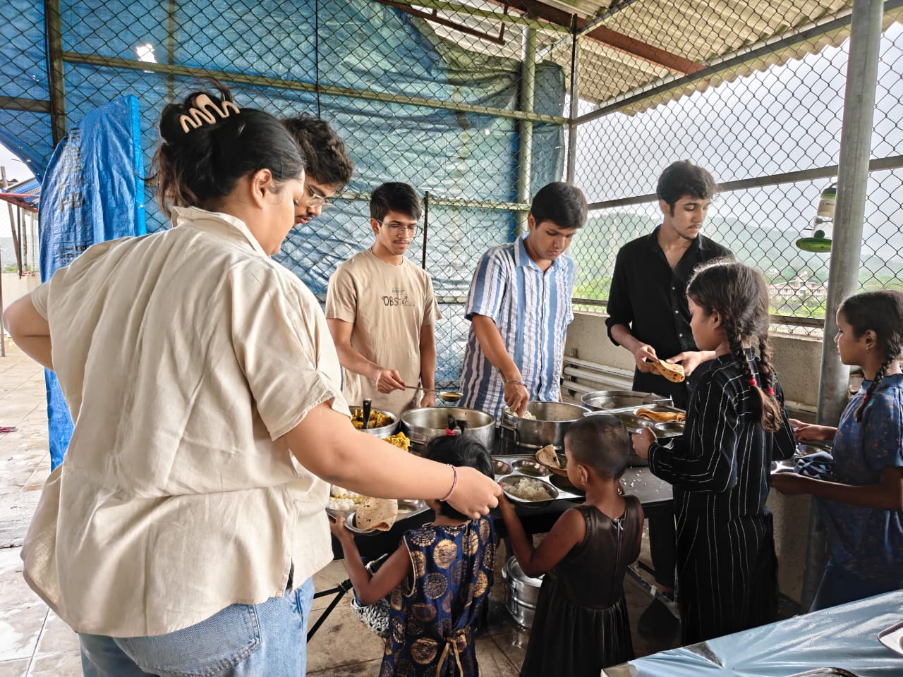
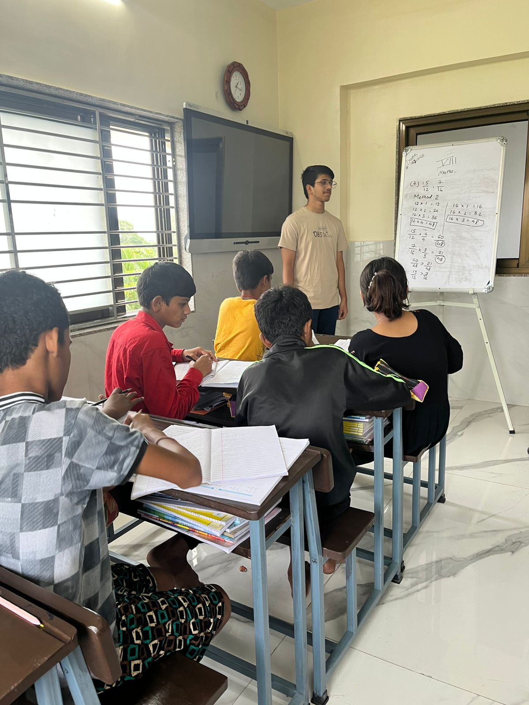
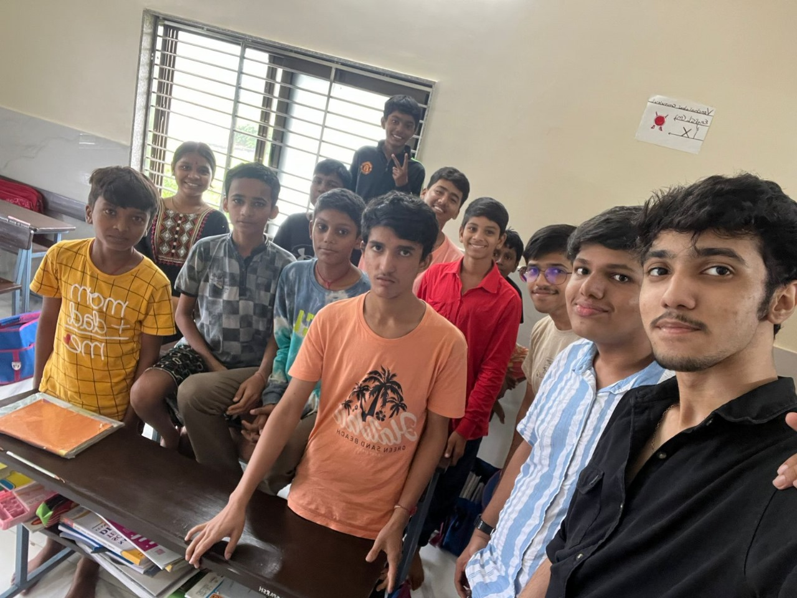

B.Tech Data Science student at MPSTME, NMIMS. I like cars, tech, and making things — from ML models and embedded systems to sketches, 3D models, and the occasional late-night idea that turns into a project.
Move your pointer up and down. Push the reading past the line and see what happens to the waveform graph.
I'm someone who likes understanding how things work, and then trying to build them myself.
I'm studying Data Science, but my interests have never stayed inside one box. I enjoy working with machine learning and AI, getting my hands dirty with ESP32s and sensors, experimenting with software, and figuring out how all of these pieces can work together in something practical.
Outside academics, cars and technology are probably my two biggest obsessions. I enjoy driving, gaming, listening to music and podcasts, reading, playing guitar, swimming, and sketching. I also like making things just for the sake of making them, from small DIY projects and 3D models to random ideas that I decide to try out.
I'm naturally a little on the quiet and shy side, but I'm straightforward once I get comfortable. I value being punctual, understanding people, and keeping things peaceful. I'm also pretty patient, sometimes probably more patient than I should be.
I don't always have everything figured out before I start. A lot of my projects begin with a simple "what if I try this?" and go from there.
Things I make just for the sake of making them.
Interested in a project, collaboration or just want to say hello?
Social service
Maratha Life Foundation
Volunteering and social-service work with the Maratha Life Foundation.


